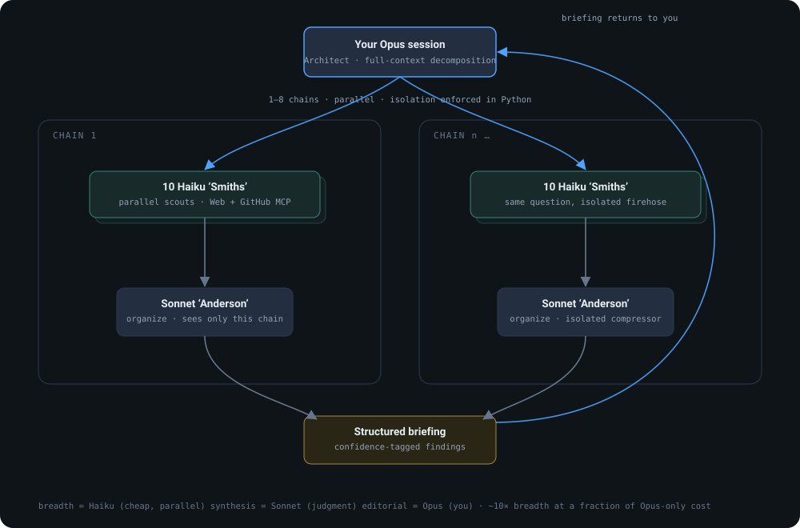

The trick is tiering the work by how hard it is. Breadth-first search is cheap and embarrassingly parallel, so it goes to Haiku. Synthesis needs judgment, so it goes to Sonnet. The final editorial call is yours, so it stays with Opus: your live session. One question becomes eighty scouts and comes back as one briefing.
The architecture

Three decisions that carry it
Tier the work, don't flatten it
Running everything on one model tier is either slow and expensive (all Opus) or shallow (all Haiku). Oracle matches each job to the cheapest tier that can do it well: 10 to 80 Haiku scouts for breadth, a Sonnet compressor per chain for judgment, your Opus session for the editorial synthesis. The result is roughly 10x the research breadth at a fraction of Opus-only cost.
Isolation enforced in code, not in a prompt
In multi-chain mode each Sonnet compressor sees only its own chain's scout reports; the orchestrator groups the data by chain in Python so no compressor is ever handed another chain's firehose. The isolation is structural, which is the difference between a guarantee and a polite request to the model.
Resilient by design
Distributed fan-out fails in boring ways, so the failure modes are handled explicitly: per-scout and per-compressor timeouts, a startup launch gate so parallel subprocesses never collide on shared state, a one-shot retry pass for failed scouts, an all-scouts-failed guard, and a raw-scout fallback so a failed compressor never discards its chain's work. Every finding is confidence-tagged (HIGH / MEDIUM / LOW) and dated, so provenance survives all the way to your briefing.
Why it's here
Orchestrating many models reliably is the same instinct as the retrieval work from the other direction: design the system so its behavior is predictable and its failures are contained, then operate it. That is the discipline I'd bring to an agent platform, tiering, isolation, and graceful degradation as first-class design, not afterthoughts.
Ken Faiman · Applied AI, agent & evaluation systems · source · faiman.com